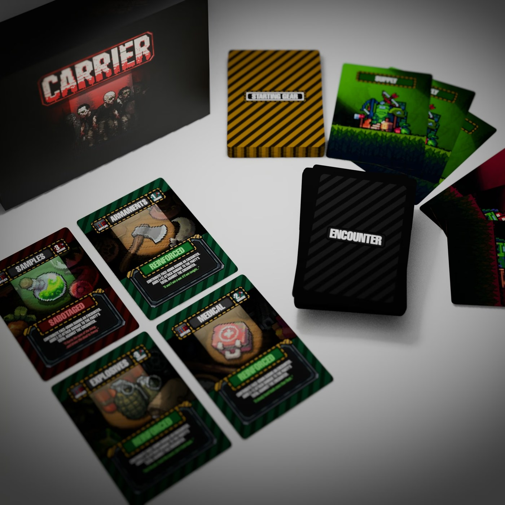

The Pre-Game Sorting Nightmare
Every major playtest teaches you something humbling. In our earlier iterations — what we'll call Version 2.0 — getting a game of Carrier to the table felt like managing inventory before you could actually play.
Because every player had to start with 3 Supplies and 3 Samples, the host had to:
- Dig through the box to separate the 42 Supply cards and 42 Sample cards from the rest of the decks.
- Count out exactly 3 Supplies and 3 Samples for every single player — 84 cards purely for setup.
- Make sure everyone had the right cards before even touching Character or Allegiance cards.
- Spend several minutes tediously sorting and resetting all 84 cards back into their piles after every match.
When you added up the entire box, the bloat was staggering:
- Starting Gear (Supplies & Samples): 84 cards
- Characters & Secret Roles: 51 cards
- Disasters & Special Conditions: 14 cards
- Encounter Deck & Support Kits: 49 cards
Total: 198 cards spread across multiple separate piles. We were spending more time sorting and resetting cardboard than actually playing. It was friction where there should have been immediate tension.

1. The 30-Second Setup: Deal, Deal, Shuffle, Play
We eliminated starting gear and separate supply decks entirely. Supplies, Weapons and Samples are now shuffled directly into the single 65-card Encounter Deck.
The entire setup and reset flow is now three steps:
- Deal Characters (Public Roles).
- Deal Allegiances (Secret Roles).
- Shuffle the Encounter Deck and start the game.
Setup time dropped from several minutes of card administration to under 30 seconds. Resetting between back-to-back games is now completely frictionless.
Along with this, we removed Support Kits — Supply Drop, Demolisher, Decoy Drones. Instead of diluting the draw pile with situational one-off cards, we baked that utility directly into stronger, more impactful Character abilities.

2. Replacing "Escape Tokens" with Live Samples
Previously, victory relied on collecting abstract "Escape Tokens" scattered across the deck. We've retired them completely and tied the win condition directly into the core survival loop: the group must find and secure real Samples to formulate the cure.
The Escape Requirement
The final escape party must hold at least 3 Samples in their collective inventory to win. Reach extraction without them and you lose.
The Dual-Edged Sabotage
Samples aren't just passive items — they carry real tactical risk during encounters. In the hands of a hidden Carrier, playing a Sample contributes a -3 Damage Sabotage, letting them quietly derail a fight under the guise of helping collect the cure.

3. Dynamic Party Sizes & Weapon Tiers
In V2.0, encounters forced an artificial, rigid player count — "choose 4 players to participate". Under the new system, weapons scale by damage and rarity instead:
- Tier 1 Weapons — 1 Damage (20 cards)
- Tier 2 Weapons — 2 Damage (10 cards)
- Tier 3 Weapons — 3 Damage (5 cards)
Because damage output is tied to weapon quality rather than a fixed headcount, encounter party sizes are completely dynamic. The party leader makes the call:
- Armed with heavy explosives and high-tier weapons? Send a lean 2-person strike team and conserve resources.
- Carrying basic tools and low-tier weapons? You'll need to rally more players to combine enough damage to beat the horde threshold.

4. The "Run" Mechanic: Mitigating Early Bad Luck
Without guaranteed starting supplies in hand from turn one, an unlucky opening draw could occasionally trap an under-geared team. To address that, we introduced the Run / Runaway mechanic.
The leader can choose to temporarily evade a drawn encounter, up to 3 Runaways per game. Fleeing doesn't delete the threat — the leader can return and tackle that parked encounter later, once the group has scavenged better gear.

5. The Math: 198 Down to 89
By eliminating separate starting piles, token systems and redundant kits, our card footprint dropped dramatically:
| Deck Component | Version 2.0 | New Streamlined Build |
|---|---|---|
| Encounter & Loot Deck | 49 + 84 + 14 | 65 Cards |
| Characters & Allegiances | 51 Cards | 24 Cards |
| Total Card Count | 198 Cards | 89 Cards |
Targeting a final production box of around 100 cards, cutting down to 89 gives us roughly 11 cards of healthy design headroom — room to experiment with new mechanics without re-introducing bloat.
What's Next?
Setup is now instantaneous, the table footprint is clean, and every card in the deck serves a direct, active purpose.
With this 89-card layout locked in, we're printing fresh prototype sets and heading straight back to the table for our next wave of playtests.